- ホーム
- 院長、スタッフ紹介、コンセプト
皆様へ～ご挨拶・
院長スタッフ紹介・医院コンセプト～
四ツ橋から徒歩2分、女性ドクター在籍の吉川歯科医院では、心斎橋や難波・四ツ橋エリアの地域に密着した地域医療をおこなっています。皆様のホームドクターとして、お口に関する小さなお困りごとにも対応させていただきます。お気軽にご相談ください。
吉川歯科医院からのご挨拶
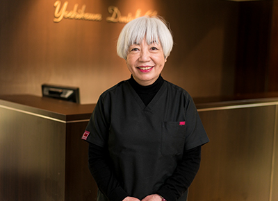
吉川歯科医院のホームページをご覧いただきありがとうございます。当院は、大阪四ツ橋から徒歩2分のアクセスしやすい立地にある地域に密着した歯科医院です。患者様お一人にかける時間は約2時間です。患者様との信頼関係を大切に、ていねいな診療を心がけております。
院内にはマイクロスコープやセレック・歯科用CTなど最先端の院内設備を取り揃えており、従来の歯科診療と比較して精度の高い診療を実現しております。
当院院長の小林は、インプラントに関して日々勉強を続けしており、より患者様のご負担が少なく安全な施術ができるよう研鑽に努めております。お口の悩みがある方は、痛みが出ている歯だけではなく、お口全体を包括的に治療している吉川歯科医院にぜひご相談ください。
院長 小林とし子
院長紹介
| 略歴 | 1974 大阪歯科大学卒業 1974 富国生命ビル前田歯科勤務 1975 吉川歯科医院管理医師 1991 吉川歯科医院西診療所移転 |
|---|---|
| 所属団体 | 大阪SJCD 会員 ILSC即時荷重研究会 会員 清歯塾 会員 早春塾 会員 |
| 星座 | みずがめ座 |
| 血液型 | A型 |
| 趣味 | 着物 |
スタッフ紹介
利田 清美
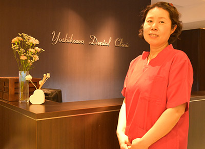
コメント
治療に対する不安な気持ちを少しでも和らげ、安心感を持って治療に臨んでいただけるよう心掛けております。診療中に質問しづらい事などがありましたらお気軽にご相談ください。
江城 貴子
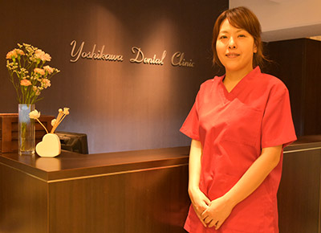
コメント
明るい雰囲気作りを心掛け、いつも元気でご対応できるよう努めています。常に親切なご対応ができるように細かな部分まで意識し、いつも笑顔で患者様をお迎えします。
清水
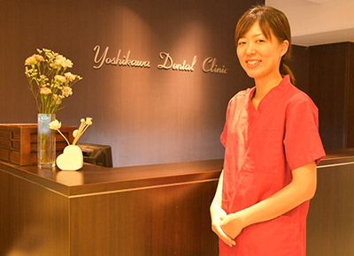
コメント
患者様のお口の中がきれいになっていくのを見ると、とてもうれしくなります。気になったことはお気軽に何でも聞いて下さいね。
藤村
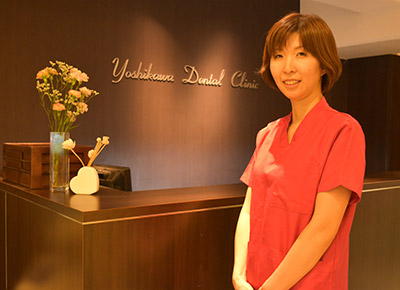
コメント
丁寧なブラッシング指導を心掛け、お口の健康をサポートさせて頂きます。気になることがありましたら、お気軽にご相談ください。
北井 淑永
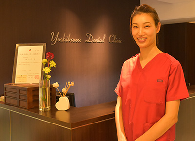
コメント
歯医者に対して不安に感じている患者様の目線で、いつも笑顔で接していけるように心掛けていきたいと思います。
私自身インプラント専門衛生士を取得しておりますので、気軽に聞いてください。
吉川歯科医院のコンセプト
患者様に対する痛くない生活の提案
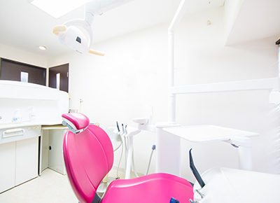
吉川歯科医院では、予防処置をおこなうことで虫歯や歯周病を事前に予防することで生活を健康に保つことを提案しています。
虫歯や歯周病が原因となり、歯が痛くなると生活の質が落ちてしまうので、早めの治療で痛みを出さない生活を維持していきましょう。
2時間ほどかけてじっくり治療
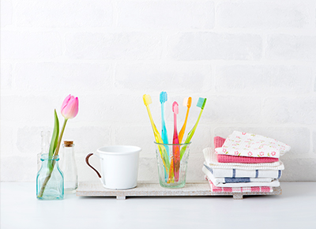
充分なカウンセリング時間を設けることで、患者様がどのようなことで悩んでいるのかしっかりと聞き出し、できるだけ寄り添った治療になるよう配慮しております。
患者様お一人と向き合う時間をきっちり設け、2時間ほど時間をかけて、じっくりとていねいな治療を心がけております。
患者様との何気ない会話
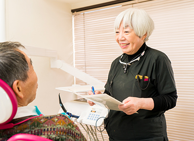
治療と関係ないような何気ない会話でも、コミュニケーションを図ることでスムーズな治療にもつながります。
中には楽しんでいただける方がいらっしゃいますので、患者様とお話しできることは診療の楽しみの一つです。
最先端の治療設備
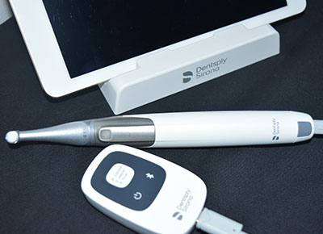
患者のみなさまにご安心して治療を受けてただけるように、しっかりと情報を収集し、最新の技術や最新の設備を導入することを心掛けています。いつでも精度の高い治療をご提供しております。
ホスピタリティ溢れる対応
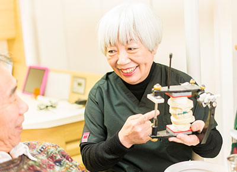
たくさんの患者様から私たちを信じていただくために、患者様に対して一人ひとりの症状や状況に合わせた最適な治療方法のご提案を行っております。なんでもお気軽にご相談ください。